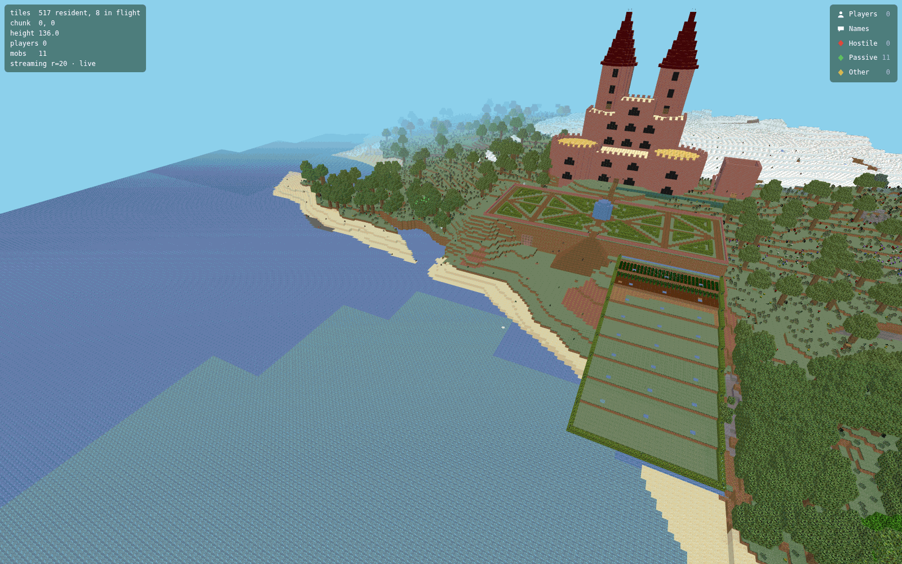

A Minecraft server, from scratch in Go
tachyne is a Minecraft-compatible server with a versionless core. The game is a database of simulation events; every version-specific concern lives at the edge. Java 1.21.5–1.21.8, Java 26.2, and Bedrock all join the same world — no client mods, no proxy bolted on after the fact.
architecturedomain events →
Why it's different
Cross-version support isn't bolted on — it's the shape of the system. The engine owns all game state and simulation; gateways at the edge turn typed events into whatever bytes a client speaks.
The engine targets a single canonical version and speaks only domain events. Clients spanning many versions read the same world through per-version renderers.
Terrain grown by ports of vanilla's own generators — trees, huge mushrooms, bee nests and their bees — plus the complete mob roster, enchanting, brewing, anvils, villages, the Nether, and the End with the dragon. A published feature matrix tracks what's done.
An ingress routes each client to the right gateway by protocol. Java and Bedrock players share the same blocks, mobs, and chat — with no client mods. The Bedrock gateway is the younger of the two: terrain, entities, movement and chat are live, while inventory screens and the survival HUD are still on their way.
Tiers 1–2 with vanilla timing: pistons, comparators, observers, the auto-crafter, target blocks, and quirks like quasi-connectivity and the dispenser's 4-tick delay.
A compiled-in plugin API with Bukkit-shaped events, an out-of-process message bus, a registry, and a manager that installs plugins by module path while the server runs.
Ships as container images built on every push, runs on Kubernetes, and scales at the edge — or comes up locally with a single Docker command.
Seeing is believing
This is tachyne-map rendering a real running world — tiles meshed in Go on the server, streamed into a WebGL viewer as you fly. No Java renderer, no world export, and it keeps up as players build.

// a real capture of the live viewer — spawn castle, streaming HUD and all. Run one against your world →
Modules
A module is an ordinary git repo installed by its module path — the go-get model applied to a running server. The registry indexes, it never hosts: code always flows git → you. Here's the curated first-party set.
A native-Go 3D web map with its own tile format and a streaming viewer — no Java, no world export. It renders straight off the engine's world data and keeps up as the world changes.
Pulls, builds, boots and supervises out-of-process plugins while the server runs — the control plane behind /plugin, with progressive fleet-wide upgrades off the registry.
Compile a plugin into the engine with a Bukkit-shaped Go API, or run one out-of-process on the bus. List it in the registry with a tachyne-plugin.json.
// Built a module? List it in the registry →
Beyond vanilla
A from-scratch engine means the world itself is programmable — not just the rules on top of it.
Swap the generator for Copernicus GLO-30 elevation data: greater Cape Town at true 1:1 scale, horizontally and vertically — the world ceiling is raised so Table Mountain's plateau stands at its real ~1,060 m. You spawn in the city bowl, looking up at it.
Point the engine at any OpenAI-compatible endpoint and NPC villagers run a perceive → decide → act loop — they walk the village, talk back in chat, and remember you between sessions with per-NPC persistent memory.
The engine is built to split a single world into physical regions served by separate pods — cross-pod handover works today as a hard-border prototype, and the whole front tier already scales by replica. Single-pod remains the production default.
Feature breakdown
Parity is tracked area by area and published as it stands — complete, in progress, or not started. Nothing here is aspirational; the full matrix spells out exactly what each status means, down to the caveats.
How it compares
tachyne isn't a faster Paper. It trades a mature ecosystem for an architecture built around multi-version support and horizontal scale — here's the honest trade.
Pick a conventional server if you want the complete game and its ecosystem today. Pick tachyne if you want a multi-version, cloud-native world built to scale horizontally — and can live with the matrix as it stands. On numbers: the ~150 concurrent sessions this project has quoted were measured on the pre-split engine, before the gateway architecture existed — the pod stack has not been re-measured, so we claim no figure for it. We publish what we've measured, not what we hope.
The parts
Each piece deploys on its own and does one job; the wire format lives in a single shared library, so a new Minecraft version is a translation step at the edge — never an engine change.
Get started
The quickstart ships a Docker Compose stack and Kubernetes manifests. Classic infinite survival by default — or walk a true-scale, real-elevation Cape Town.
# clone the quickstart, then bring it up
git clone https://github.com/tachyne/tachyne
cd tachyne
# one container, procedurally generated, full survival
TACHYNE_OPS=YourName docker compose up -d
# …or walk the real Cape Town at true 1:1 scale
TACHYNE_OPS=YourName docker compose -f docker-compose.yml -f docker-compose.earth.yml up -d
# now connect a client ↓A fresh server is open by default (anyone can join under any name). Don't expose it to the internet as-is — see the quickstart's security note.